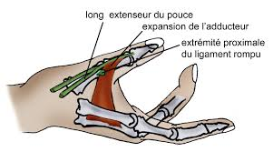

Bienvenue Sur Medical Education
Les entorses : generalites
Definition
L’entorse est l’ensemble des lesions capsulo-ligamentaires produites par un traumatisme articulaire n’ayant donc pas abouti a la luxation. Il n’y a pas de perte permanente de contact des surfaces articulaires.
L’entorse est le resultat d’une mise en tension exageree d’un ligament ou d’un groupe de ligaments.
On determine:
L’entorse grave il y a rupture d’un ou plusieurs ligaments compromettant la coaptation et la stabilite de l’articulation.
L’entorse benigne : elle consiste en une lesion partielle des ligaments, ne modifiant pas la stabilite de l’articulation.

Signes cliniques
L’entorse benigne
Douleur : plus ou moins vive pouvant aller jusqu’e la syncope. A la palpation, point douloureux precis et isole.
Impotence immediate : suivie d’une recuperation fonctionnelle plus ou moins douloureuse et complete.
Presence d’une tumefaction, d’ecchymose d’apparition progressive.
Chaleur locale : due a la reaction vasomotrice.
Pas de deformation.
L’entorse grave
Tableau clinique de l'entorse benigne.
Sensation de craquement pereu.
Hematome precoce: souvent en oeuf de pigeon due a une rupture d’une arteriole consecutive a la rupture du ligament.
Complications et lesions associees
Lesions associees
Avulsion ou arrachement d’un fragment osseux par un ligament ou un tendon.
Fracture.
Complications
Les recidives : entraenent des douleurs et une instabilite a la marche.
L’arthrose.
Les troubles trophiques : œdeme en fin de journee, atrophie musculaire, osteoporose douloureuse pour les cas les plus graves.
Traitement
Contention elastique, avec mise au repos de l’articulation (bequille).
Parfois chirurgie.
Reeducation apres la periode d’immobilisation.
Voir aussi :
Arthrologie
Module Orthopedie Traumatologie